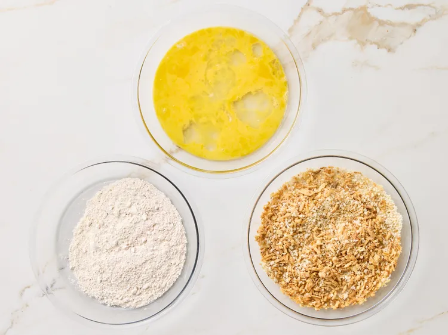
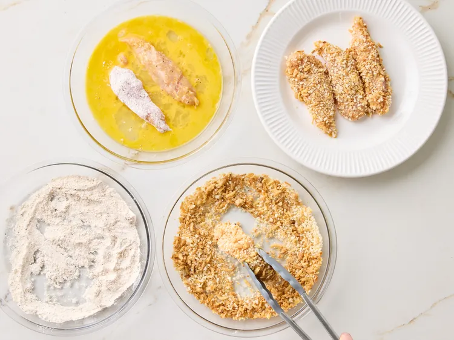
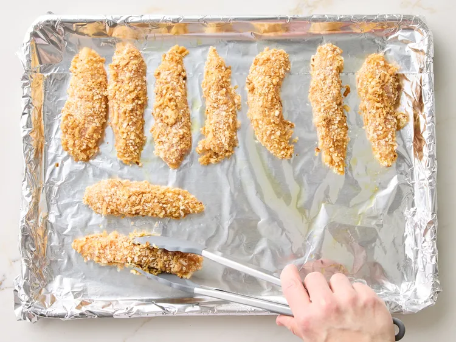
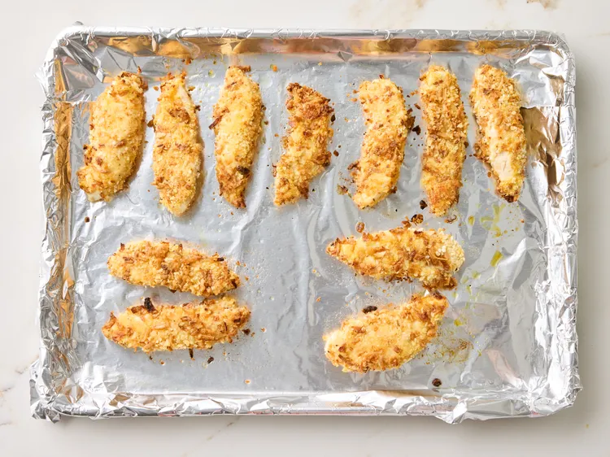
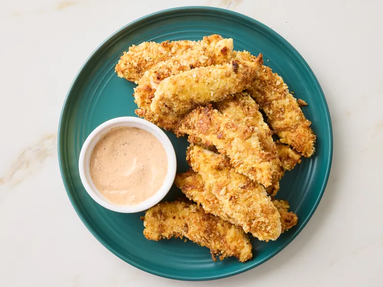

Home
Bloomin Onion Chicken
This Bloomin’ Onion Chicken delivers all the savory, crunchy flavors of the classic
steakhouse appetizer in an easy, oven-baked dinner. Don't skip the dipping sauce! It pairs
perfectly with the crispy onion-coated chicken and takes it to the next level.
Ingredients
- 3 tablespoons olive oil
- 1 pound boneless, skinless chicken breast tenders
- 1/3 cup all-purpose flour
- 1 teaspoon onion powder
- 1/2 teaspoon salt
- 1/2 teaspoon garlic powder
- 1/2 teaspoon smoked paprika
- 1/2 teaspoon freshly ground black pepper
- 2 large eggs, well beaten
- 1 cup crushed French fried onions
- 1/2 cup panko bread crumbs
Onion Dipping Sauce
- 3 tablespoons mayonnaise
- 3 tablespoons sour cream
- 1 tablespoon prepared creamy horseradish sauce
- 1 tablespoon ketchup
- 1 tablespoon white vinegar
- 1 teaspoon onion powder
- 1/2 teaspoon garlic powder
- 1/2 teaspoon smoked paprika
- 1/2 teaspoon salt
- 1/2 teaspoon freshly ground black pepper
- 1/4 teaspoon cayenne pepper
Steps
- Line a 13x18-inch rimmed baking sheet with aluminum foil and drizzle with 3 tablespoons olive oil. Place the pan in the oven while it preheats. Preheat the oven to 425 degrees F (220 degrees C).
- Stir together flour, onion powder, salt, garlic powder, paprika, and pepper in a shallow dish. Place beaten eggs in second shallow dish. Combine French-fried onions and breadcrumbs in a third shallow dish.

- Dip each chicken tender first into the flour mixture, then the egg mixture, and finally the onion–breadcrumb mixture until fully coated; set aside.

- Carefully remove the baking sheet from the oven and swirl to coat with the hot oil. Arrange coated chicken pieces onto the prepared baking sheet.

- Bake in the preheated oven for 8 minutes. Flip and continue baking until the chicken is golden brown and cooked through, about 5 to 6 minutes more, or until an instant-read thermometer inserted into the thickest part reads at least 165 degrees F (74 degrees C).

- Meanwhile, whisk together mayonnaise, sour cream, horseradish sauce, ketchup, white vinegar, onion powder, garlic powder, smoked paprika, salt, pepper, and cayenne for the dipping sauce in a bowl until smooth.

- Serve chicken with onion dipping sauce.
